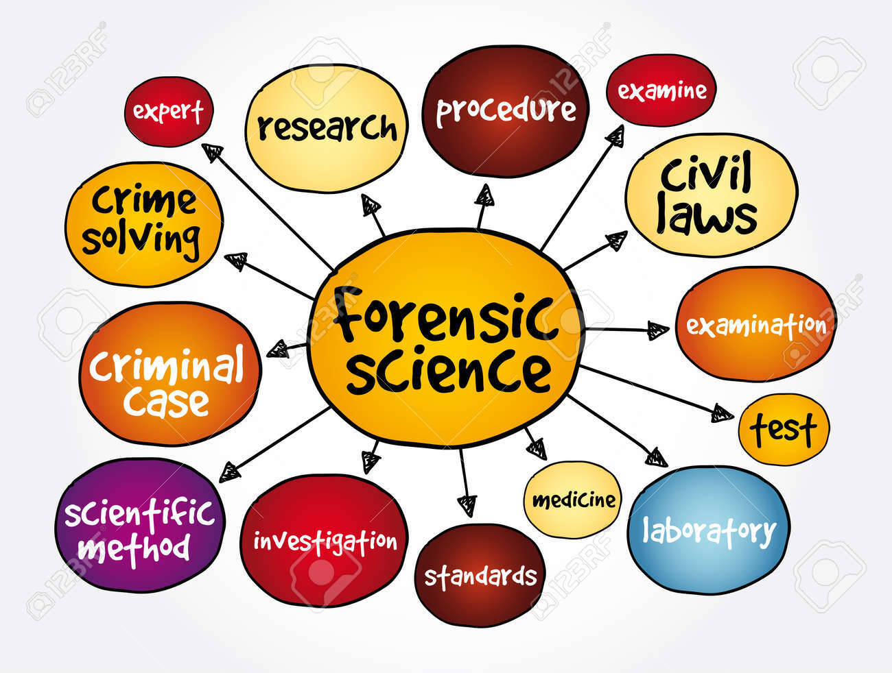
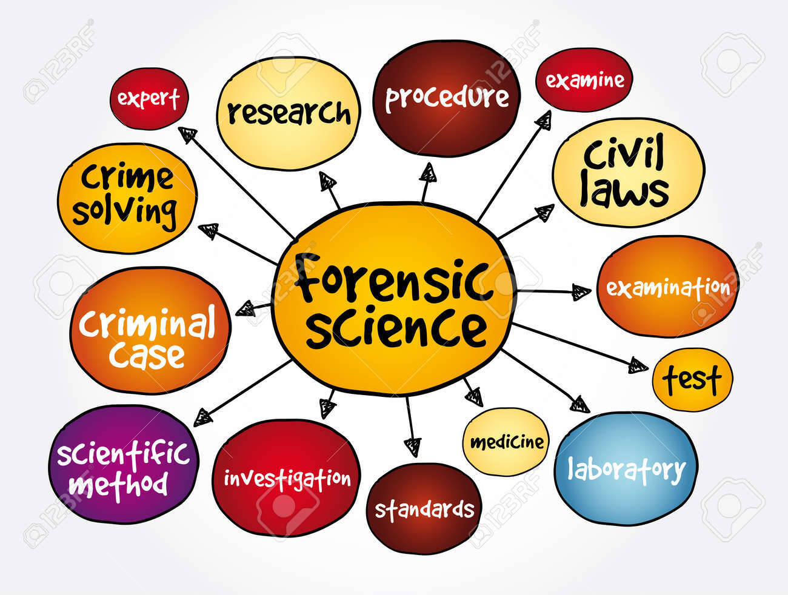
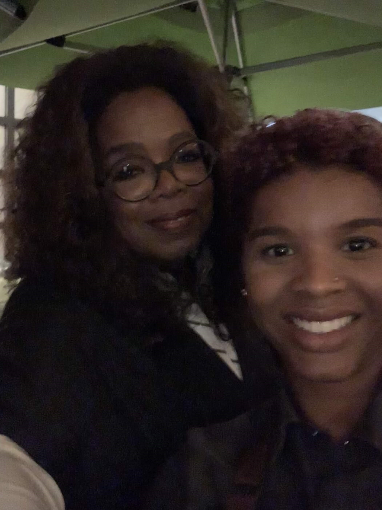
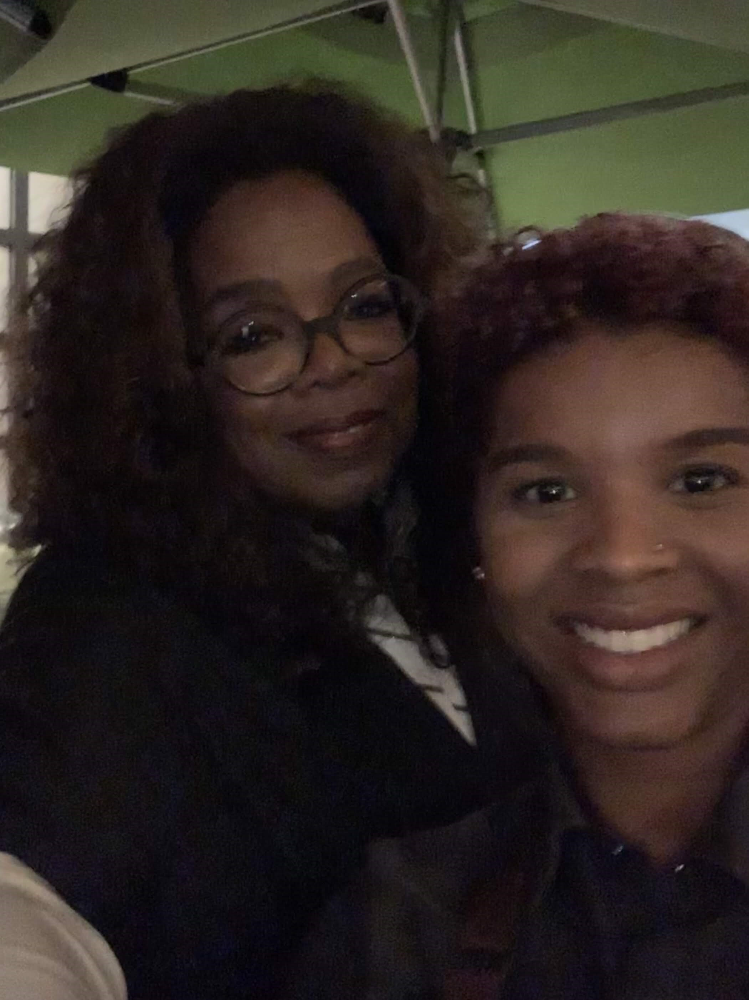
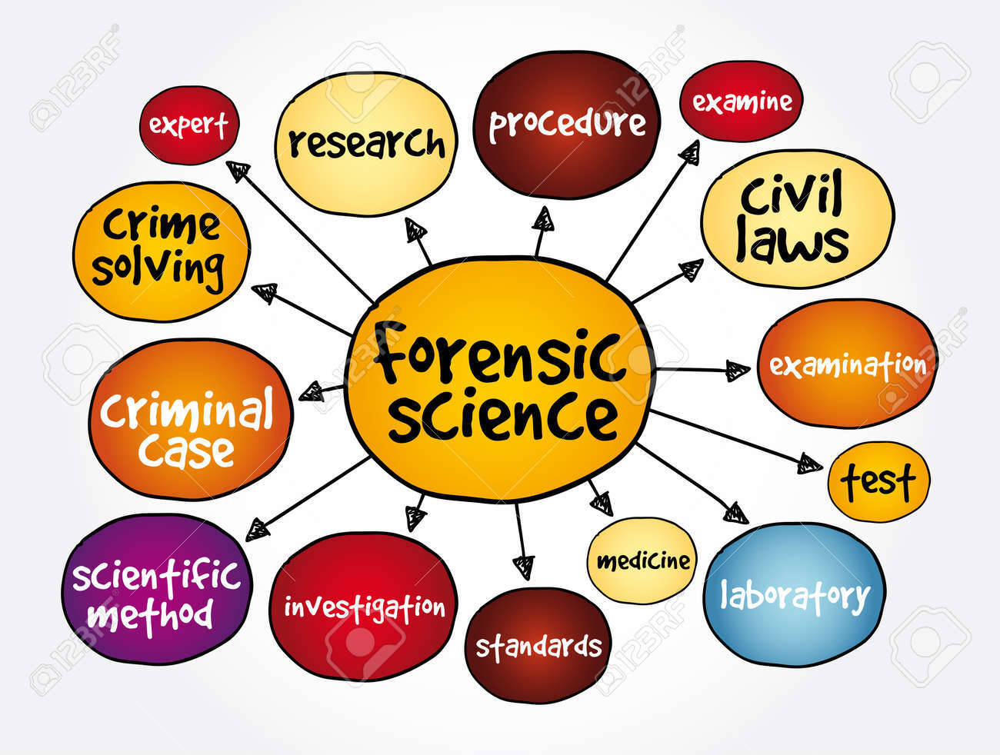
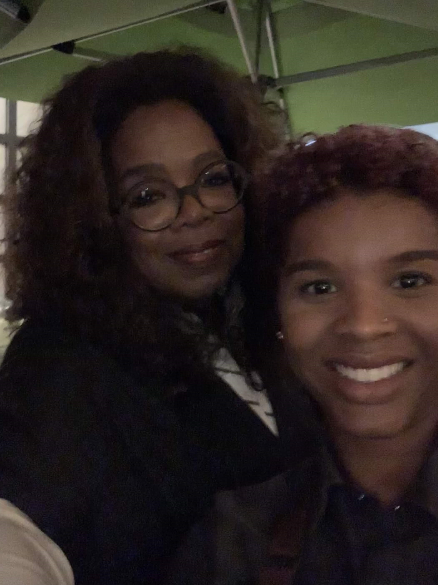

Catherine Ewing Moore
As a passionate advocate for the rights of victims and defendants, I am committed to upholding the highest ethical standards of the profession. I am dedicated to staying up-to-date with the latest research and developments in the field and am always seeking new ways to improve my skills and knowledge. I am excited about the opportunity to make a positive impact on the criminal justice system.
I am optimistic in my ability to make the most of each interview since I have experience working with a range of people, involving victims, witnesses, and suspects. Additionally, I’ve conducted investigations previously and am acquainted with the protocols and practices involved in the entire process.
I am writing to express my interest in the Forensic Psychologist position at your esteemed organization. With a strong background in psychology and a passion for understanding criminal behavior, I am confident that my skills and experiences make me a perfect fit for this role.
Experience
Legal Administrative Assistant
• Trained and become proficient in the JCATS case management program
• Generated reports for case files
• Answered and provided confidential information to clients
Prep Cook
• Aided in the inaugural opening of Whole Food’s Pasadena first full-service restaurant
• Maintained quality control for all products in the kitchen
Office Assistant
• Assisted the staff and physician with non-clinical activities
• Prepared and gathered patient files
• Created MOHS Surgery Kits for medical staff
• Assisted with any secreterial work
Education
UC Riverside
Chaffey College
Pasadena City College
Portfolio
 

.jpg) 

.png)

